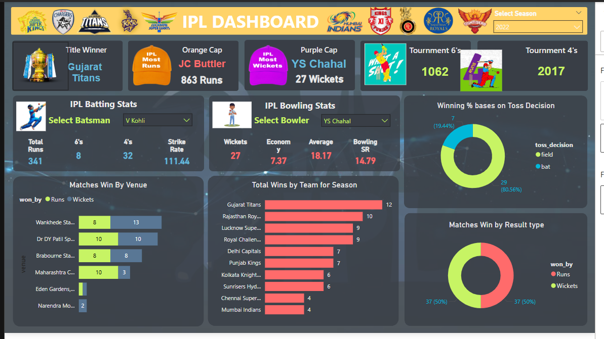

IPL Dashboard
To create an interactive and visually engaging dashboard using Power BI that provides season-wise insights from IPL 2008 to 2022. The goal is to help users explore trends in team performance, individual player achievements, match outcomes, and tournament highlights.

Complete Power BI dashboard showcasing IPL insights from 2008 to 2022.
Project Overview
- The IPL Dashboard is designed to analyze key metrics such as title winners, player performance (Orange and Purple Cap holders), team stats, and toss decisions. The report enables users to select specific seasons, batsmen, and bowlers to gain dynamic and meaningful insights, making it ideal for fans, analysts, and sports decision-makers.
- Tools Used: Microsoft Excel | Power BI | SQL
- Techniques:Power BI, DAX, Slicers and Filters for Interactivity, KPI Cards, Bar Charts, Donut Charts, and Custom Visuals.
What I Did
- Imported and cleaned IPL match and ball-by-ball datasets (2008–2022).
- Built calculated DAX measures for:
- Title, Orange Cap, and Purple Cap winners
- Total 6s, 4s, and matches by season
- Batting and bowling stats filterable by player
- Toss decisions vs match outcomes
- Wins by venue, result type, and team
- Designed filterable visuals to view batting and bowling stats by selected players.
- Analyzed toss decisions vs match outcomes to calculate winning percentages.
- Visualized matches won by venue, total wins per team, and result types.
- Applied a clean, modern "Sporty Retro" color palette with cricket-themed icons
Tables Created
ipl_matches_2008_2022ipl_ball_by_ball_2008_2022
DAX Queries
Implemented custom DAX measures to calculate:- Total Batter Runs – Aggregated using SUM() with string formatting.
- Strike Rate – Calculated as (Runs / Balls Faced) * 100
- Bowler Wickets – Total wickets delivered using conditional summing
- Bowling Strike Rate & Economy – Derived from ball count and filtered run data
- Matches Won by Toss Decision – Using CALCULATE() to compare toss winner vs match winner
- Title Winner – Dynamic calculation based on the latest match date in the selected season
Key Deliverables
- A complete end-to-end IPL Dashboard solution in Power BI.
- Year-wise Title Winner, Orange Cap, and Purple Cap insights.
- Tournament-level KPIs – total 6’s, 4’s, and matches played.
- Dynamic Batting and Bowling Stats filtered by player.
- Toss Decision Analysis with win percentages.
- Visualizations of Match Wins by Venue, Result Type, and Team Wins per Season.
- Custom-styled dashboard using Sporty Retro color palette for aesthetic clarity.
- Cricket-themed visuals and slicers to enhance interactivity.